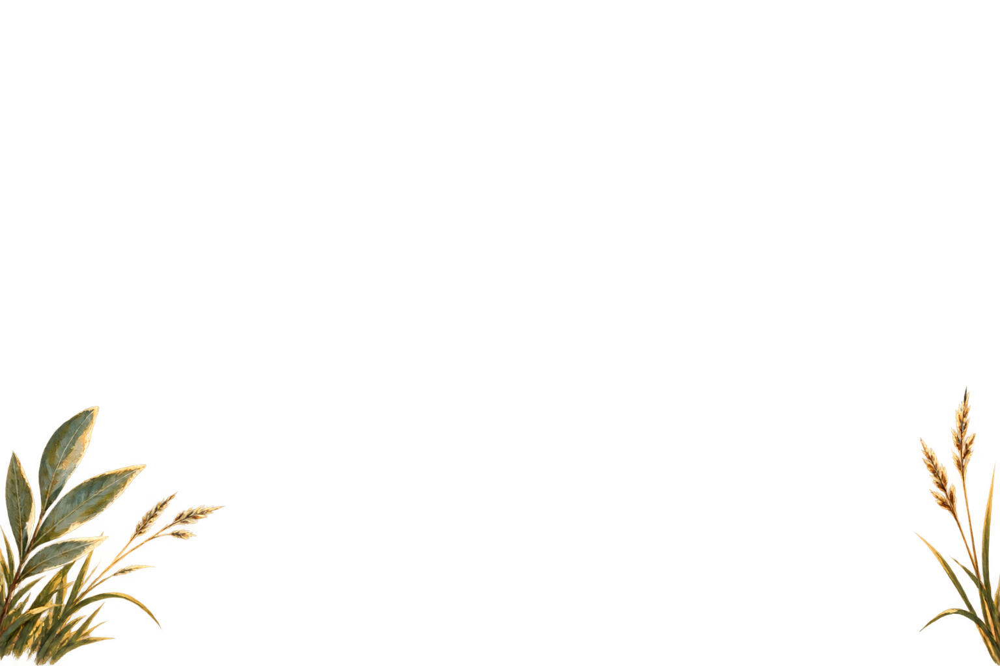

قصص الأنبياء
المراجع
قصة مصوّرة تفاعلية
قصص الأنبياء
تُجهَّز القصة…
قصص الأنبياء
قصص الأنبياء
1
/
1
المراجع

رسم توضيحي
تعذّر تحميل الرسم. يمكنك متابعة النص أو إعادة تحميل الصفحة.
1
من
2
ختام القصة
حكايةٌ بقيت في الذاكرة
أعد القصة
المراجع والنص القرآني
تُحمَّل المراجع…
تحتاج القصة التفاعلية إلى تفعيل جافاسكربت في المتصفح.
العودة إلى قصص الأنبياء
.